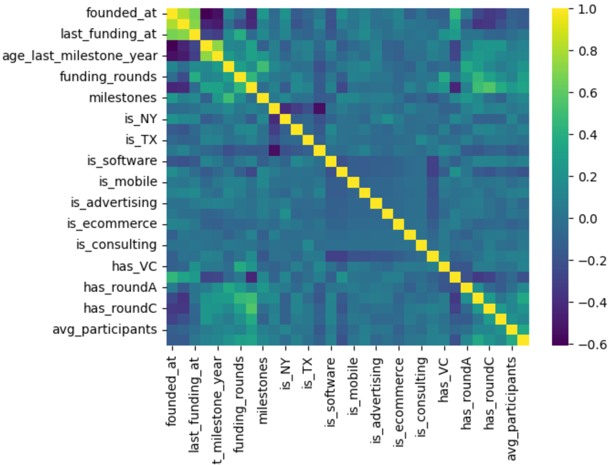
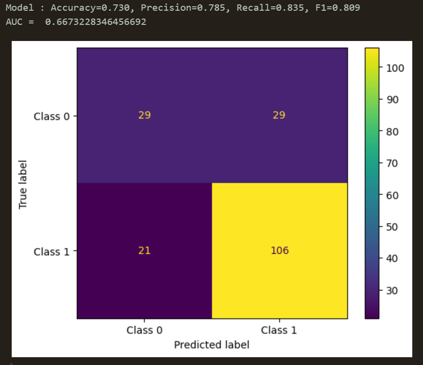
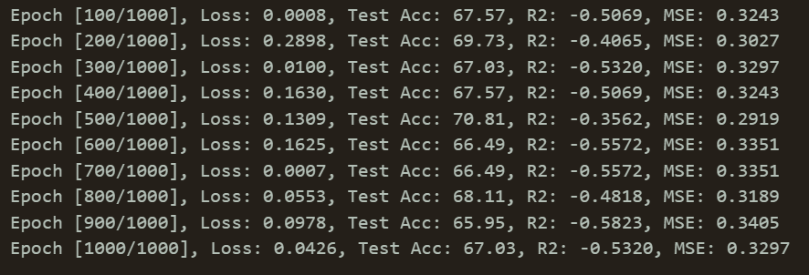

Tools Used/ BOM
- Jupyter Notebook
- PyTorch
- Pandas
- Seaborn
- SciKit-Learn
Presentation
Summary
This machine learning project focused on predicting startup success through various models and techniques, achieving significant insights into model evaluation, data preprocessing, and class balance. Key tasks included implementing evaluation functions to assess models, cleaning and encoding data, and addressing class imbalance using SMOTE. Despite mixed results, the project provided valuable learnings about the impact of data quality, feature selection, and model tuning on predictive performance.
Details
To ensure robust analysis, the project implemented a custom model evaluation function using metrics like accuracy, precision, and F1 score. Extensive data cleaning involved dropping irrelevant columns and encoding categorical features to enhance model interpretability. Class imbalance, a common issue in startup datasets, was mitigated with SMOTE, improving the fairness of model training. The project explored multiple machine learning algorithms, including logistic regression and random forest, to diversify approaches. Outlier management was prioritized, with a focus on improving model sensitivity and accuracy. Hyperparameter tuning was employed, but performance gains were inconsistent, reflecting the complexity of predicting startup outcomes.
Challenges
Several challenges hindered the project's ability to achieve optimal predictions. The limited and sometimes irrelevant dataset features restricted the models’ capacity to accurately predict startup success. Even with SMOTE and outlier handling, models struggled with sensitivity to data quality and the presence of noise. Feature engineering and hyperparameter tuning were attempted but provided limited improvements, emphasizing the difficulty of achieving reliable results with a constrained dataset. These hurdles highlighted the importance of high-quality, relevant data and careful feature selection in predictive modeling.
[Written by AI]
[edit] After asking my professor about the project I found out that MSE and R2 shouldn't be tracked when dealing with classification problems, so really the models weren't as bad as I thought. That's resassuring to know :)